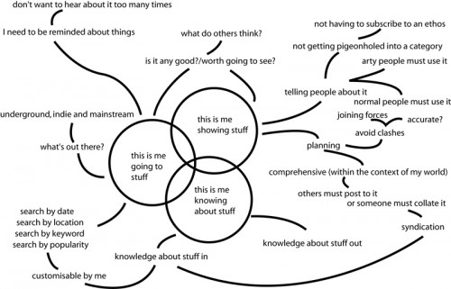

There’s a lot more to that graph of Nikki Pugh’s that I blogged yesterday. A hell of a lot more.

I roughly grouped what I wanted from events listings into 3 different aspects: going to see stuff (consuming/whatever you want to call it); knowing about stuff (for general background awareness or specific research); and me showing stuff (a sort of producer role). Wow, look how point-heavy the showing stuff area of the diagram is (top right-hand corner).
[…]
What I’ve done today is thought about 4 of the places I listed and looked at what aspects of my wish-list they provide for. I opted for a really quick, intuitive approach because it’s a bit of an apples and oranges situation and I’m not really sure how you’d start to make a rigorous comparison. What follows is probably more useful if you regard the 4 as different models rather than as specific instances. As ever this post comes with the warning that I’m just writing as things occur to me because this site is basically my sketchbook. Don’t anyone else get too bogged-down by the details either.
Essential reading if you’re interested in how information about events and creative activity can be structured and how it then filters through to the target audience. Go read and digest.
(Nikki doesn’t have comments on her blog – bad Nikki! – so feel free to have any discussions here.)
other stuff that I have on lists from trying to build livebirmingham.
– Who do I know that’s going to this event? (facebook)
– Can I create my own events on the site, and have them sitting next to more established events (ala upcoming.org)
– How can they be tagged so that traffic is driven around popular events from the same genre?
– How do I see only what’s relevant to me?
– What value can be added to the listings by other attendees/ readers, e.g. giving them permission to add extra details such as links, comments, photos etc
– Who is the editor?
– How do I get there? (Tickets, location and keeping these up to date when they change)
I don’t think any of the major sites that list events have really nailed it yet, upcoming lacks detail of major events, last.fm is great for music fans but you have to give it a lot of attention before you get anything useful, facebook is great for organising parties but isn’t used to connect strangers and ticketmaster holds all of the keys for tickets.
I asked for an API key to make a ticketmaster / upcoming / facebook mashup, but was told ‘were already working on it, sorry’
It seems the social aspect is key.
Bottom line: your (listings) site is only as good as the audience it reaches.
[there’s another discussion there about how you measure that]
If you can keep a check on the moderation side of things I think a huge amount of value can be added by allowing others to contribute, not just in terms of increasing the knowledge-base, but because it changes the way you assess the information being presented.
Let’s assume that we generally want to be offered some sort of opinion on how good something is before we try and decide whether we will make the effort to go and see it ourselves. We need to judge that somehow. In a single site-owner/compiler set up that roughly equates to knowing the person or having experience on whether their views are aligned with yours.
In a multiple contributor set-up (ie comments or reviews appended to the organiser’s blurb) we substitute a sort of voting system where we’re likely to be swayed by the majority’s viewpoint. Is it just me or does that seem a lot, well, safer? Any psychologists out there?
I know that’s quite simplistic, and maybe both approaches are equally valid, but the point I really want to get at is that by allowing people to contribute you also give them a small piece of ownership over the site. It’s like a sort of vested interest thing and that can only help to build a returning audience, can’t it? That’s where value comes from and it’s a difficult beast to tame.
My initial reaction to the other points Tom raised is that they are largely technical issues and I assume the basic solutions already exist and it’s more a case of finding the right way of implementing them. Back to the human aspect again.
hmmm, hadn’t thought about adding in ticketing functions!
@Pete
I know, I know, they’re coming in the next version I promise!
I’m about ready to let some people loose on the redesign to get some feedback. If anyone fancies a test-drive just drop me a line through the contact form.